Магазин музыкальных инструментов
Описание идеи проекта
Разработка приложения для автоматизации работы музыкального магазина.
Описание предметной области
Предметной областью являются музыкальные инструменты: гитары и синтезаторы.
Анализ аналогичных решений по 3 критериям
| Критерий |
Музторг |
DYNATONE |
7 Нот |
| ассортимент |
+ |
- |
+ |
| программа лояльности |
+ |
+ |
+ |
| доставка |
+ |
+ |
- |
Use-Case - диаграмма
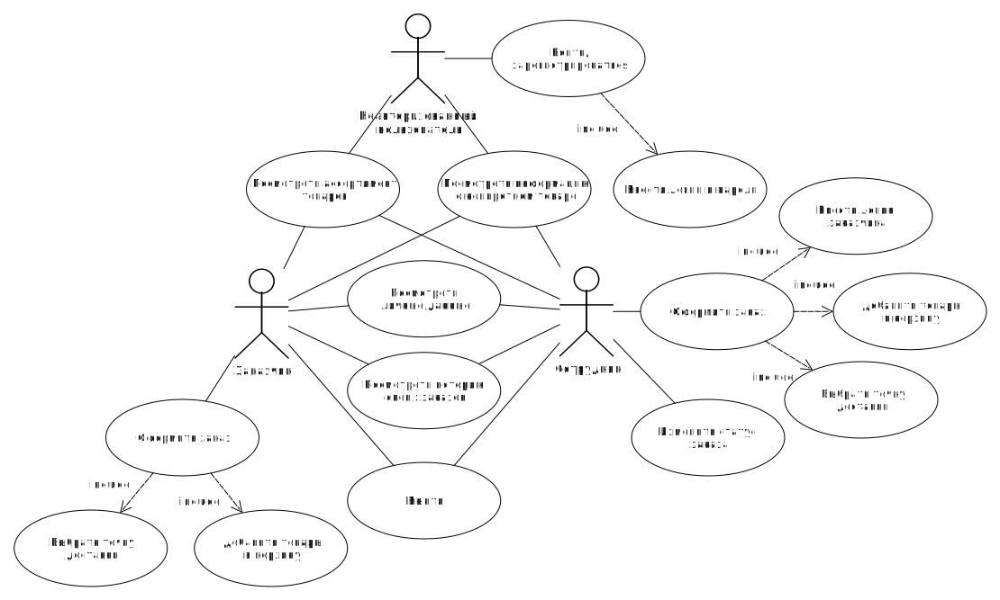
ER-диаграмма сущностей
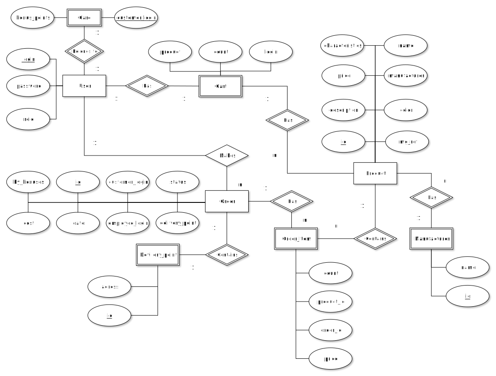
Пользовательские сценарии (в текстовом виде)
Неавторизованный пользователь
- Войти/зарегистрироваться. Для этого нужно ввести логин и пароль.
- Посмотреть информацию о конкретном товаре
Клиент
- Выйти
- Посмотреть личные данные
- Добавить товар в корзину
- Перейти в корзину. После перехода в корзину клиент может удалять товары из корзины, выбрать точку доставки или нажать на кнопку сделать заказ.
- Посмотреть историю заказов
Сотрудник
- Выйти
- Посмотреть личные данные
- Добавить товар в корзину
- Перейти в корзину. После перехода в корзину сотрудник может удалять товары из корзины, выбрать точку доставки или нажать на кнопку оформить продажу.
- Посмотреть историю продаж
- Изменить статус заказа
Формализация бизнес-правил (в виде BPMN)
- Регистрация
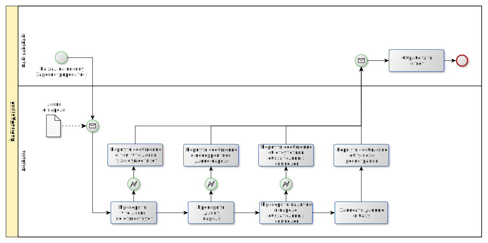
- Оформление заказа.
При оформлении заказа из его стоимости вычитается количество бонусов на карте пользователя, затем на оставшуюся сумму начисляется 5% бонусов.
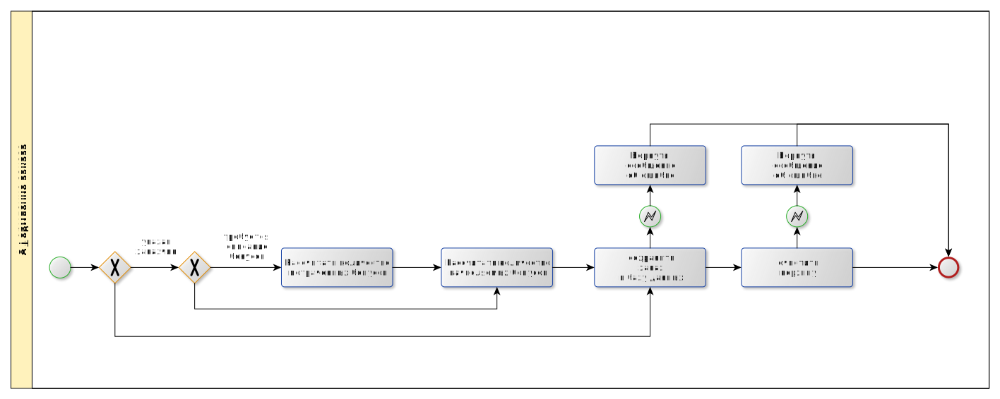
Описание типа приложения и выбранного технологического стека
Тип приложения: Web SPA.
Технологический стек:
- Backend:
- Java
- Spring Framework
- Frontend:
- REACT
- База данных:
- PostgreSQL
Верхнеуровневое разбиение на компоненты
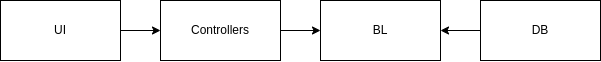
UML диаграмма классов компонента бизнес-логики и компонента доступа к данным
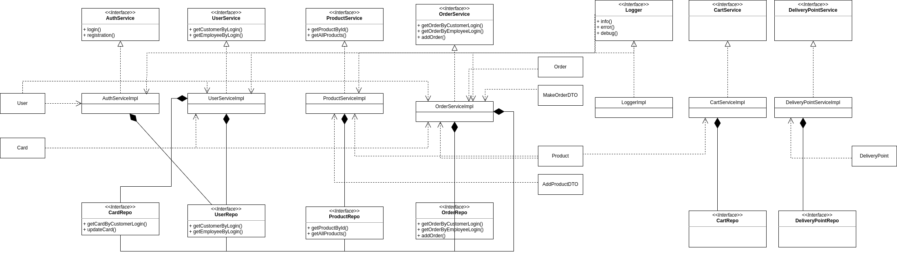
Экраны будущего web-приложения на уровне черновых эскизов
Авторизация

Домашняя страница
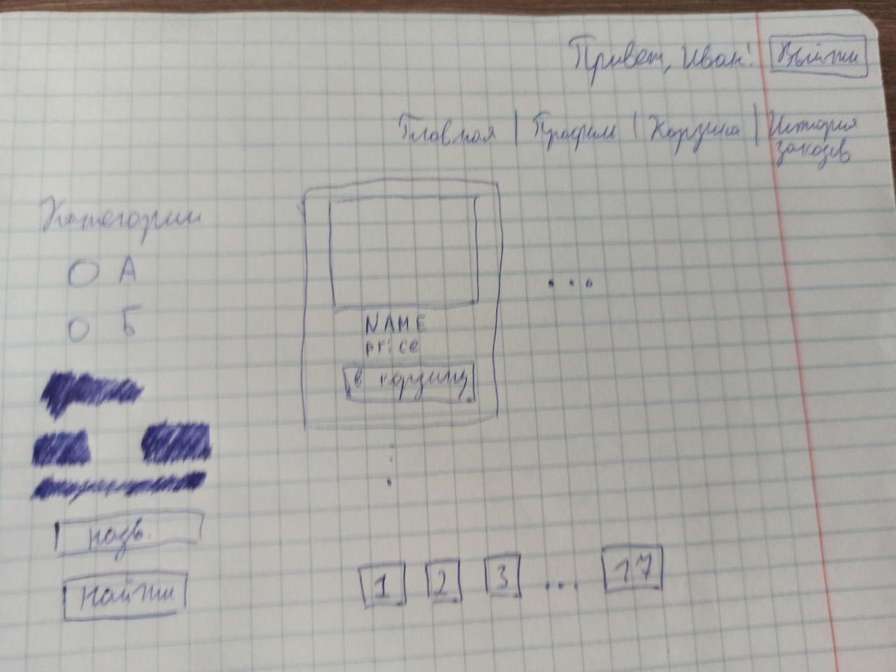
Информация о пользователе
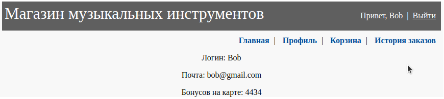
Информация о товаре
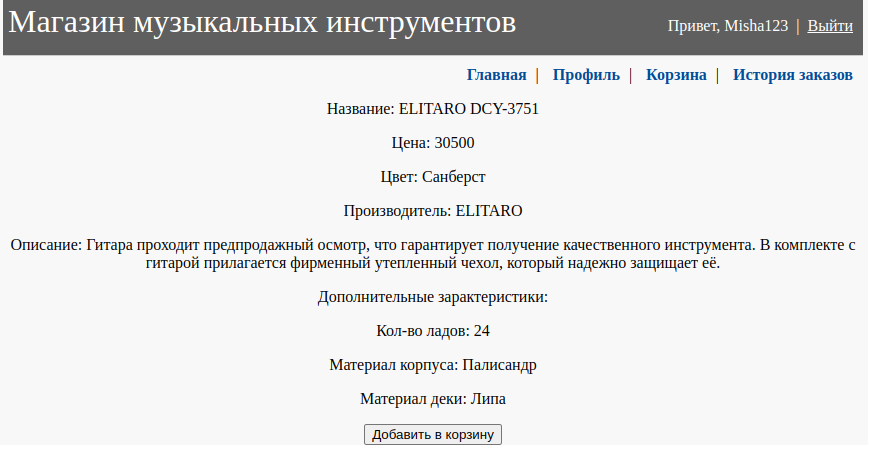
Корзина
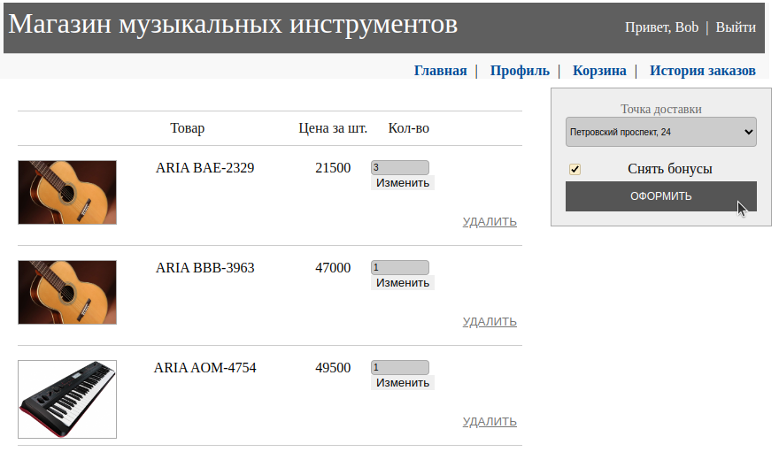
История заказов
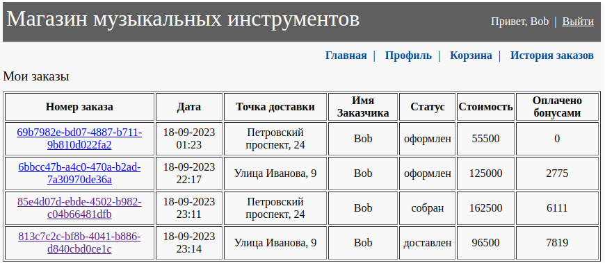